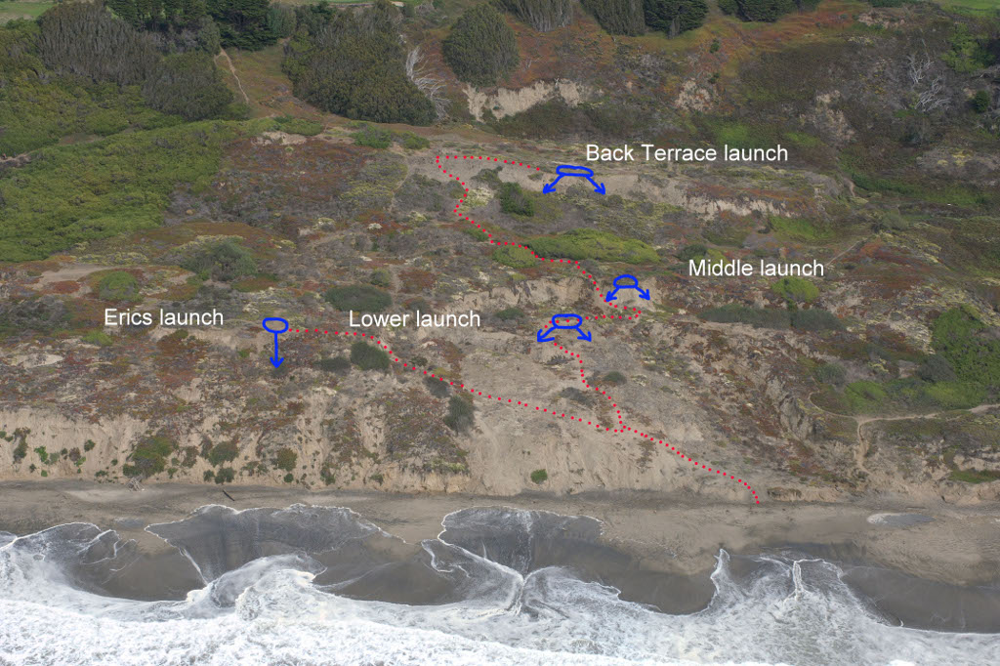

Fort Funston Training Bowl Rules:
Pilots must contact the Training Bowl Director (see Club Officers page) and receive authorization before training at the Funston Training Bowl.
- Site Management: The Funston Training bowl is property of The Olympic Club (Golf Course) and is managed by the Golden Gate National Recreation Area (GGNRA). The Fellow Feathers of Fort Funston Hang Gliding Club has been authorized by the GGNRA to manage hang gliding activities in the Funston Training Bowl. The Fellow Feathers appoints a Training Bowl Director to oversee these activities.
- Instructors: Must be a current USHPA Certified Instructor. Each instructor will be directly responsible for their students.
- Authorization: Instructors must contact the Training Bowl Director and receive authorization before teaching at the Funston Training Bowl.
- Revocation: The Funston Training Bowl Director or any club officer can, for cause, revoke an instructor or students authorization to use the training bowl.
- Commercial use: Commercial training/instruction is not permitted.
- Site Closure: The Training Bowl Director or a Fellow Feathers Club Officer may close the Training Bowl if they have determined that the conditions are not suitable for training.
- Boundary: The Funston Training Bowl is the area directly west of the Olympic Club golf course and extending west to the Pacific Ocean. The northern boundary is the GGNRA/Olympic Club golf course property line, and the south end is the cliff at the edge of the eroded area of the golf course.
- Access to training area: Take the sand trail that is immediately south of the Fort Funston launch to the beach. From there, walk south to the Training Bowl landing zone and walk up area.
- Paragliding: Paraglider training or instruction is not permitted.
- Gear: Each instructor must carry a knife with a sharp point that can cut sail cloth, and robust wire cutters in case of a water landing rescue.
- Students must have the following:
- Current USHPA membership with a minimum H1 rating.
- Site orientation from the Training Bowl Director or a USHPA Certified Instructor.
- Sign-off for 90 degree turns and cross wind landings.
- A hook knife attached to their harness.
- Students may not soar the Funston ridge until they get their Advanced (H3) rating.
- Beginner (H1) and Novice (H2) rated students must be under an Instructors supervision to fly in the Training Bowl.
- Glider Limitations: No more than 5 gliders may train in the Bowl at any one time.
- Caution: Uneven ground, high tide, and gliders with a better than average glide ratio can contribute to challenging or dangerous conditions. A straight glide towards the ocean is not advisable; Always turn before reaching the water line! Make sure there is plenty of beach available and that it's clear before launching: Do not launch if there are people or horses in the landing area.
- Other: Be courteous to other park visitors, they have the right-of-way. Pick up and carry out your trash.
